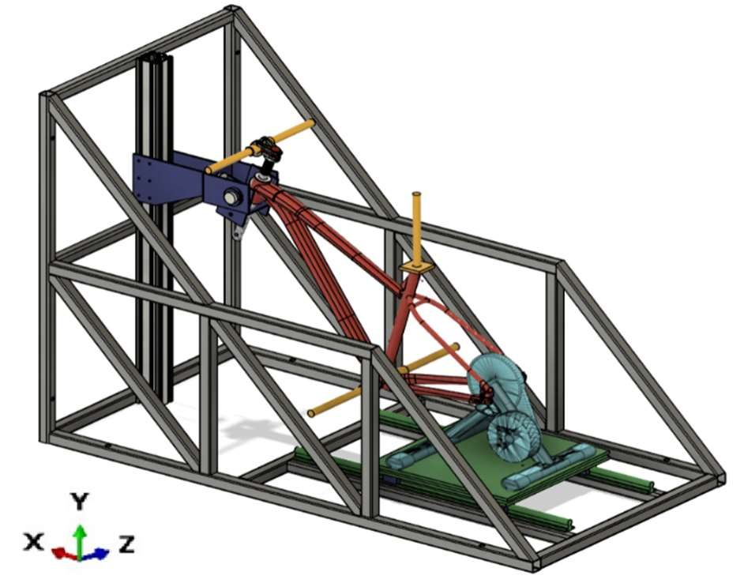
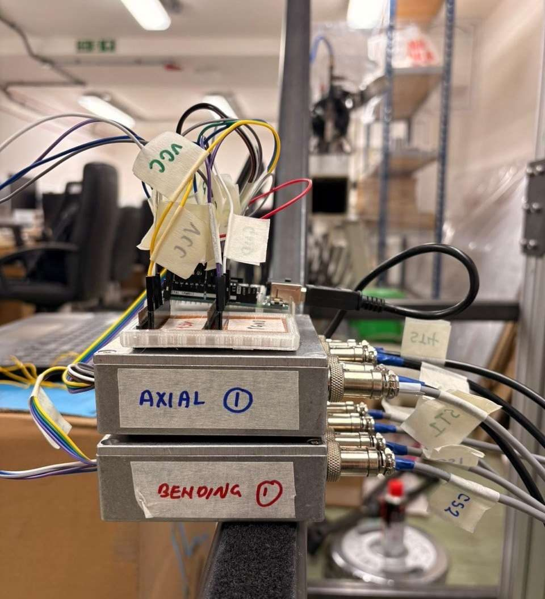
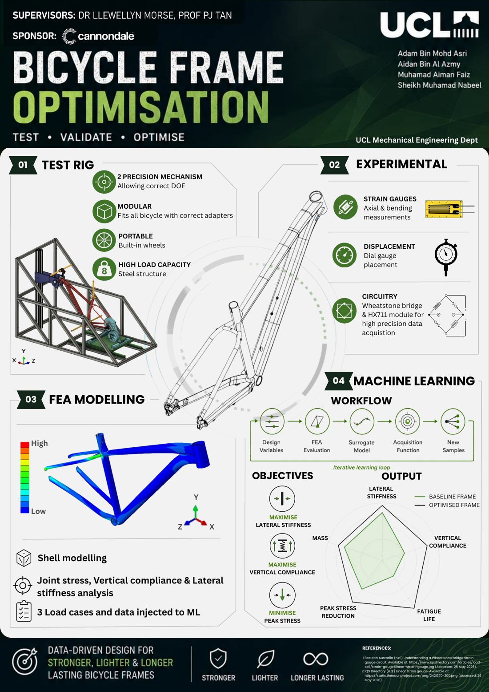

MECH0073 · Year 4 capstone · Team of 4 · With Cannondale
High-Performance Bicycle Frame Optimisation
A system that generates personalised mountain bike frame geometries. It combines experimental strain data, finite element analysis and optimisation to maximise lateral stiffness and vertical compliance while reducing peak stress.
My role: experimental lead & validation
- Helped design and build a universal test rig in Fusion 360, with a front gimbal and rear hub that reproduce the FEA boundary conditions. I checked its rigidity with FEA at 2.5× the planned loads (minimum safety factor 2)
- Built a measurement system of 16 strain gauges in eight back-to-back pairs, wired to Wheatstone bridges and HX711 modules on an Arduino. It agreed with beam theory to <1% (axial) and ~0.83% (bending)
- Combined strain and dial-gauge data from three load cases of up to 90 kg with Abaqus FEA to find where the model and the real frame differed. I also designed a 3D-printed adapter so the dial-gauge readings were repeatable
- Rebuilt Cannondale's industrial CAD in SolidWorks and processed the raw HX711 counts into the validated datasets the team's Bayesian optimisation used. The optimised frame raised predicted fatigue life by about 36×
- Secured the frame and its CAD by contacting manufacturers directly until Cannondale agreed to support us